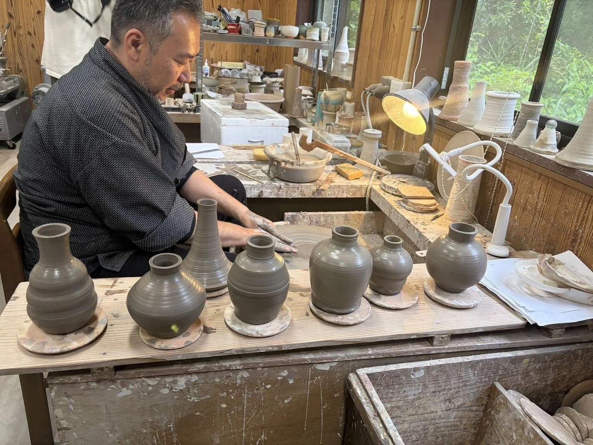
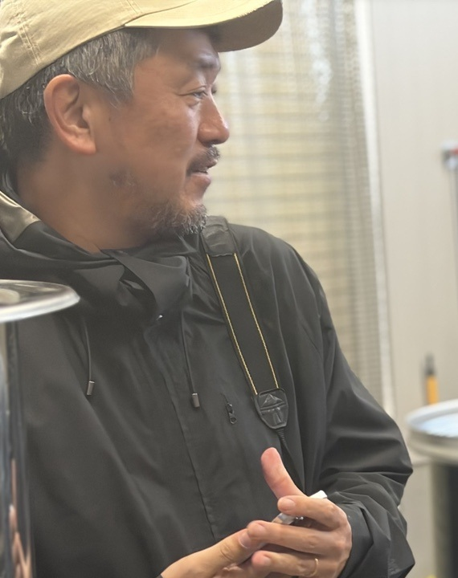

PEOPLE
Through one person's words,
a place comes into view.
Producers, chefs, artisans and editors. Behind food are individual lives and livelihoods.

Daiki Kambayashi
President, Maizuru Shokuseikatsu Co., Ltd. / Fish wholesaler

Ryuhei Yoshida
Akaushi beef producer / Sankyo Group

Keisuke Seno
Chef / Due ligne+

Kiriko Hitachi
KIFUTATO WINES / Winemaking and winery operations

Kasho Morioka
Ceramic artist / Kasho Kiln

Ichiro Erokumae
Editor / Head of Food HEROes